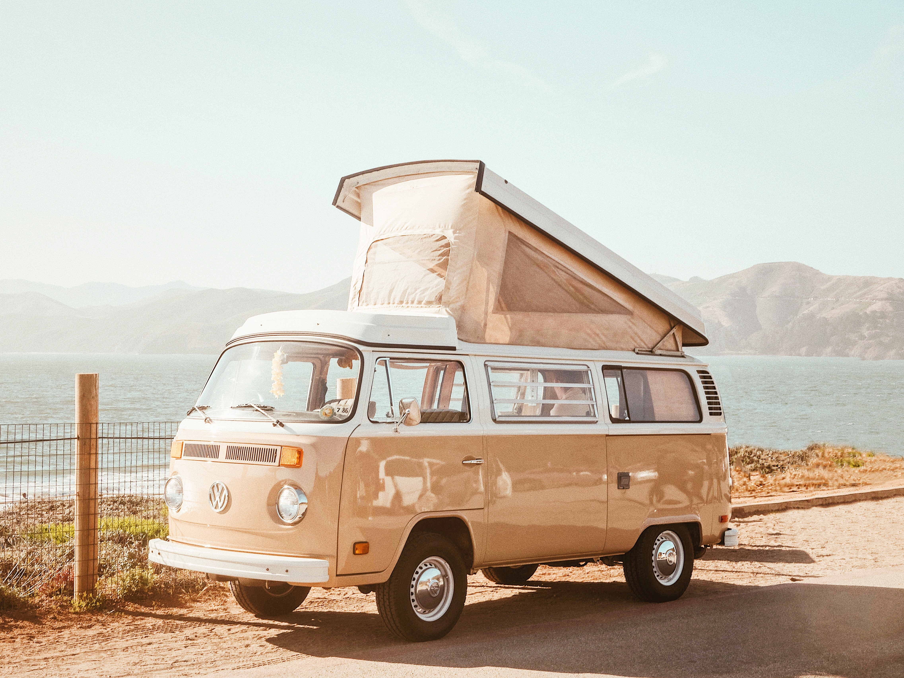

Yosemite Park Guide
Come explore California’s beautiful wilderness.
Always open. Reservations are not available or required to enter the park.
Come explore California’s beautiful wilderness.
Always open. Reservations are not available or required to enter the park.
Not just a great valley, but a shrine to human foresight, the strength of granite, the power of glaciers, the persistence of life, and the tranquility of the High Sierra. First protected in 1864, Yosemite National Park is best known for its waterfalls, but within its nearly 1,200 square miles, you can find deep valleys, grand meadows, ancient giant sequoias, a vast wilderness area, and much more.
Fire is a natural and essential part of Yosemite. We manage fire carefully and study how it interacts with the park’s ecosystems. This blog provides updates about fires in Yosemite. Check for current fire restrictions.
We strongly recommend that you make reservations for lodging, camping, and backpacking. You can pay the park entrance fee upon arrival (there's no need to pay it in advance).